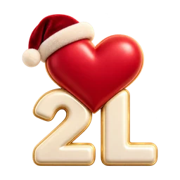

2luv 크리스마스 공방
당신의 크리스마스 선물을 준비하고 있어요.
산타와 요정들이 작은 부분까지 정성껏 준비하고 있어요. 블랙 프라이데이부터 크리스마스 선물을 만들 수 있어요.
- 일
- —
- 시간
- —
- 분
- —
- 초
- —
공방을 준비하고 있어요…
선물 만들기 도움말
꾸미기, 미리보기, 공유하기
이 디자인에는 무엇이 들어 있나요?
크리스마스 선물은 글, 사진, 음악을 담은 여덟 순간이 있는 방으로 열립니다. 선물 태그와 서명이 개인적인 의미를 더합니다. 아직 만들기를 이용할 수 없다면 작업실은 편집기 대신 공개 안내를 표시합니다. 기다리는 동안 이 가이드를 읽을 수 있으며, 만들기를 시작할 수 있는 시점은 계속 해당 안내에 따릅니다.
나만의 선물로 어떻게 꾸미나요?
편지 만들기에서는 먼저 받는 사람의 이름을 입력하고, 서명 항목이 있으면 자신의 이름을 더하세요. 추억에서 직접 쓴 메시지와 사진을 추가하고 지원되는 노래 링크를 붙여 넣습니다. 디자인에 따라 더 꾸밀 수 있는 항목이 있습니다. 상대에게 보여 주고 싶은 사진을 선택하고 사진의 잘린 부분과 맞춤법을 확인한 뒤 다음으로 진행하세요.
미리보기에서 무엇을 확인하나요?
마치기 전에 미리보기에서 메시지, 사진의 잘린 부분, 음악을 확인하세요. 휴대폰에서는 미리보기 버튼이 입력 화면과 별도로 선물을 엽니다. 예시의 이름, 사진, 글은 디자인을 설명하기 위한 시연용이며 자신의 내용이 아닙니다. 예시를 닫으면 입력 화면으로 돌아갑니다. 직접 입력한 내용은 자신의 미리보기에서 확인하세요. “이 예시 사용”은 편집기를 예시 내용으로 채웁니다. 내용이 있는 초안은 확인 후 교체하며, 같은 페이지에 있는 동안 “예시 실행 취소”로 초안을 복원할 수 있습니다.
완성한 선물을 어떻게 보내나요?
만들기 단계를 마치고 화면에 표시되는 옵션에 따라 선물을 공유할 준비를 하세요. 공유 옵션을 사용할 수 있을 때 메시지나 이메일로 링크를 보내거나 인쇄 카드에 QR 코드를 사용할 수 있습니다. 화면에 표시된 링크와 접근 정보를 보관하세요. 비밀번호를 설정했다면 받는 사람에게 별도로 전달하세요.